大家好，我是豌豆，一名专注针织/布艺玩偶创作的手工博主。
这里是我的个人小站，欢迎你的光临。
从2018年开始，我用一针一线编织属于生活的温柔，每一只玩偶都融入了独特的设计巧思与手工温度，希望我的作品能给你带来治愈与美好。
Hello, I'm Wandoo, a handmade blogger specializing in knitting/fabric doll creation. This is my personal website, welcome to visit. Since 2018, I have woven the warmth of life with every stitch and thread. Each doll incorporates unique design ingenuity and handcrafted warmth, hoping my works can bring you healing and joy.
每一件都是独一无二的手工创作
Each piece is a unique handmade creation
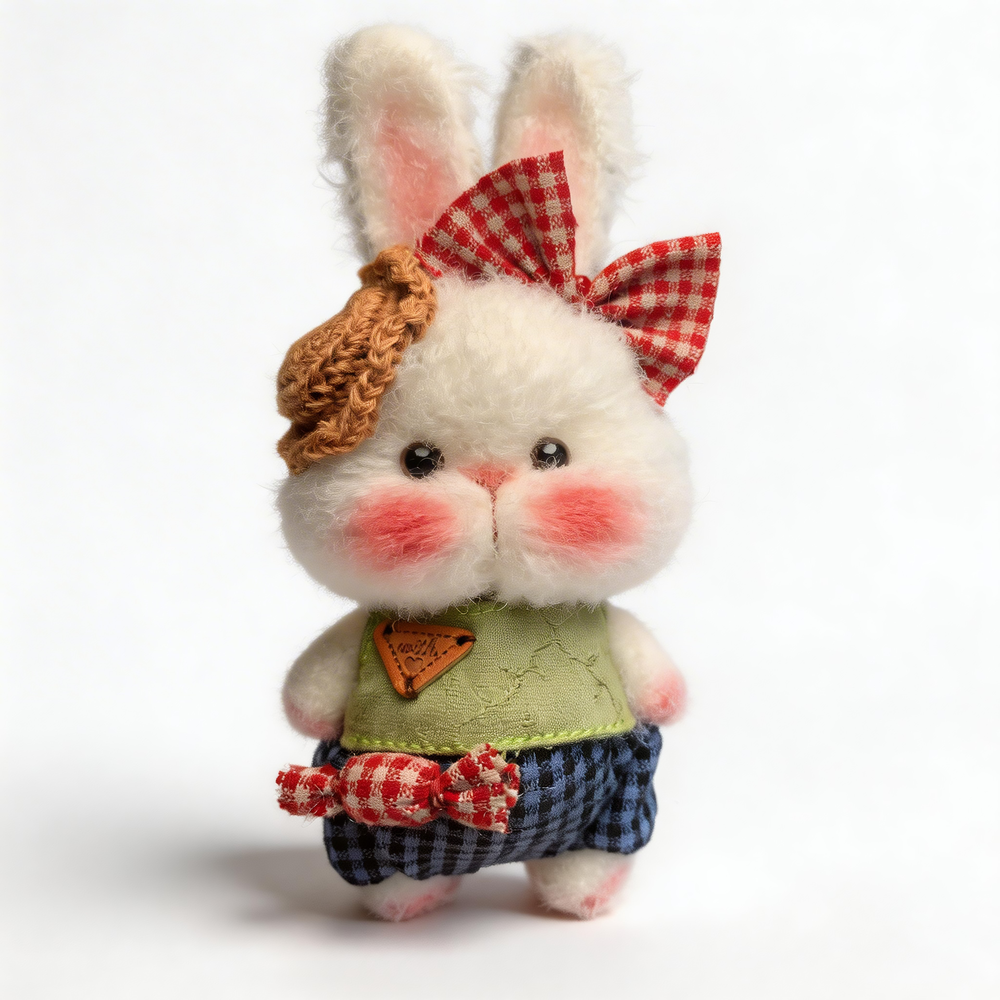
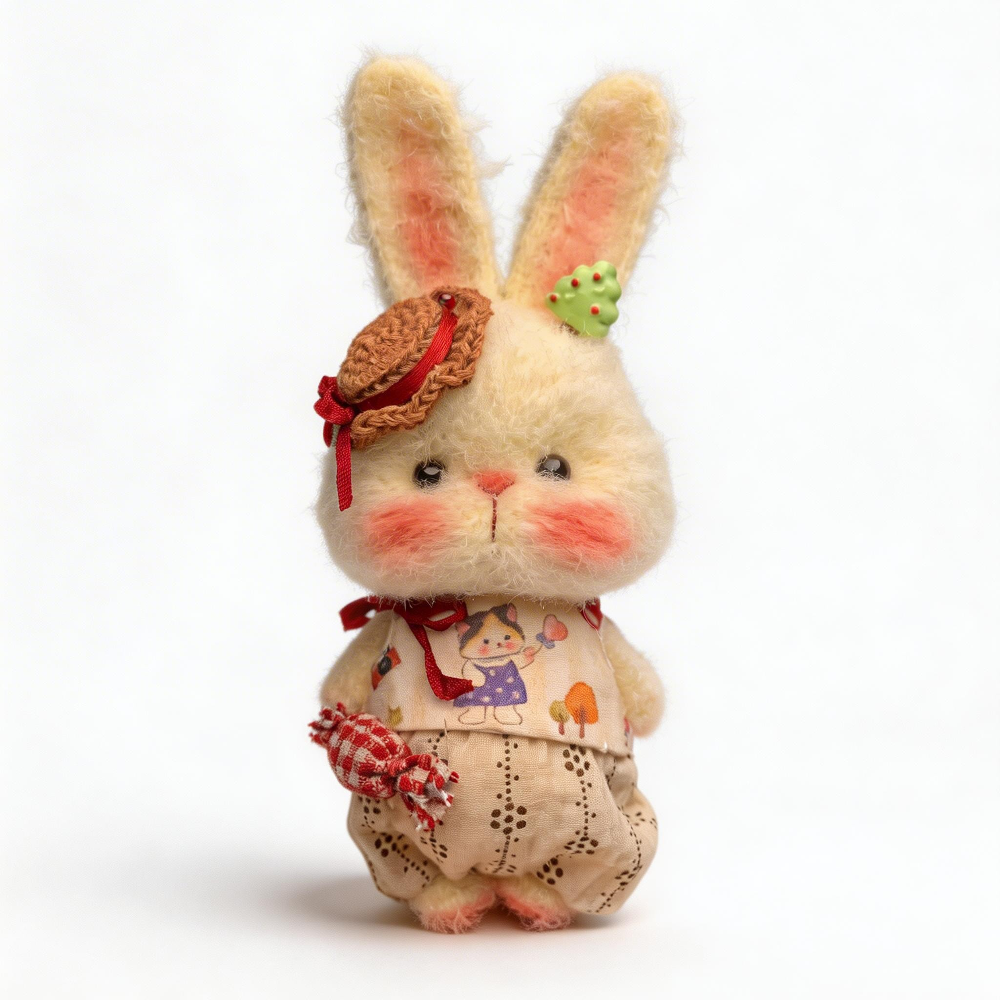
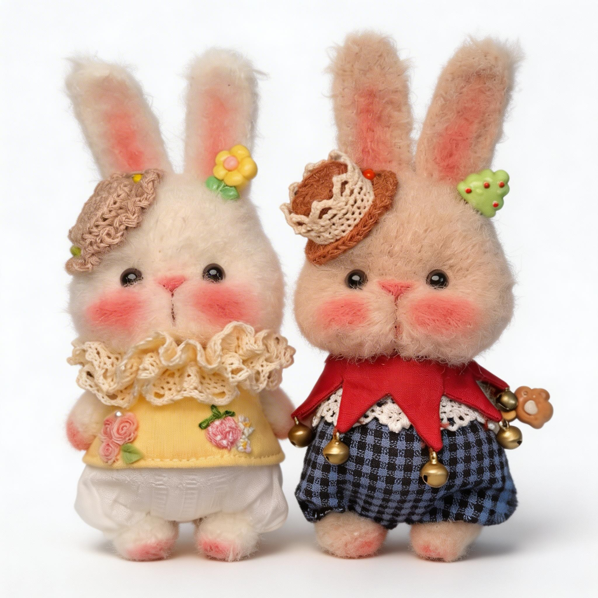
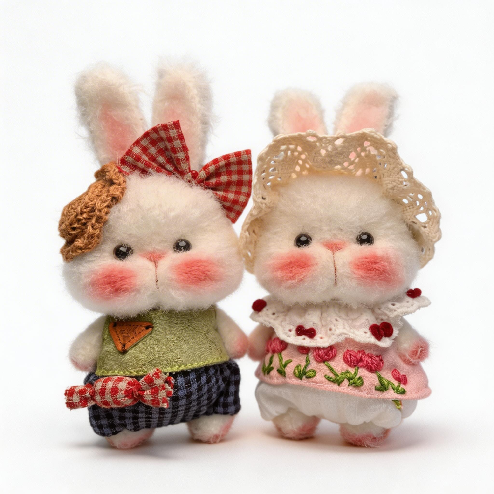
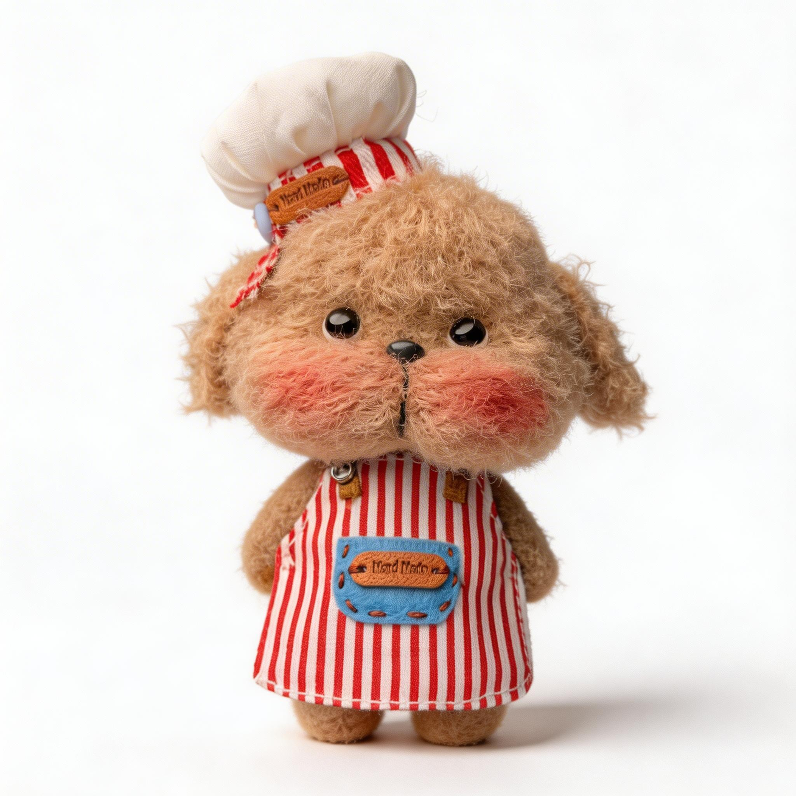
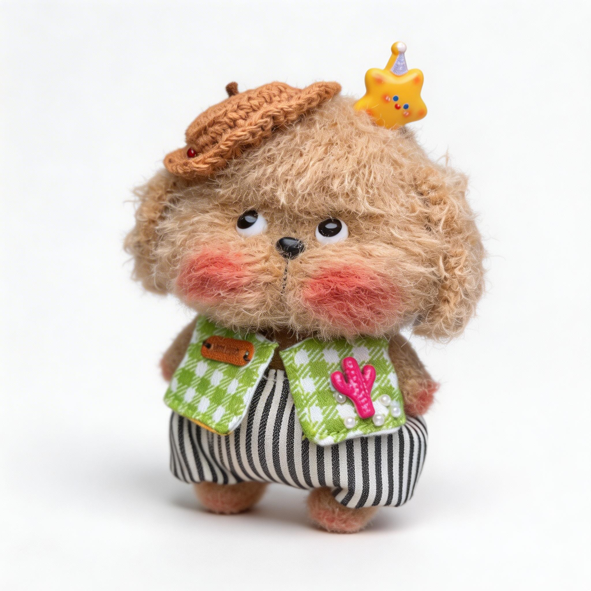
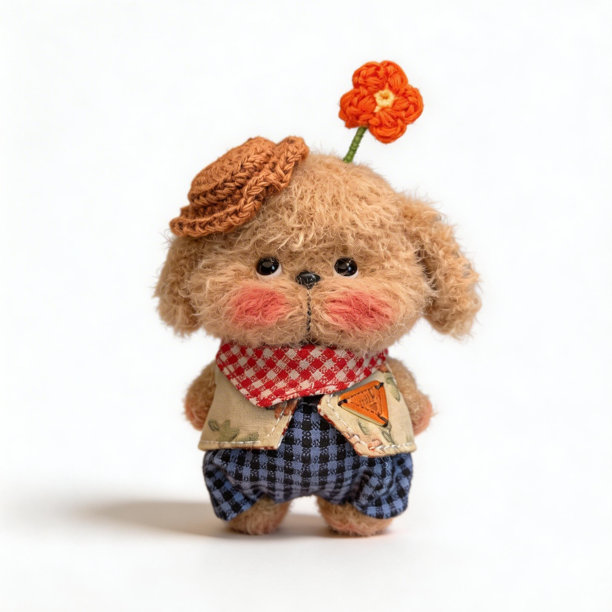
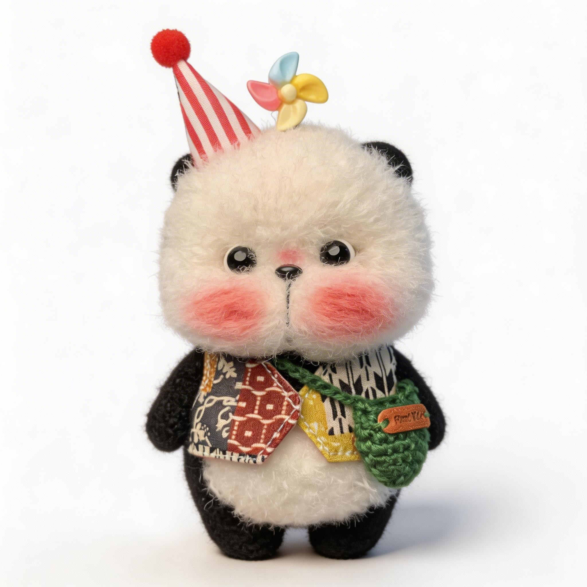
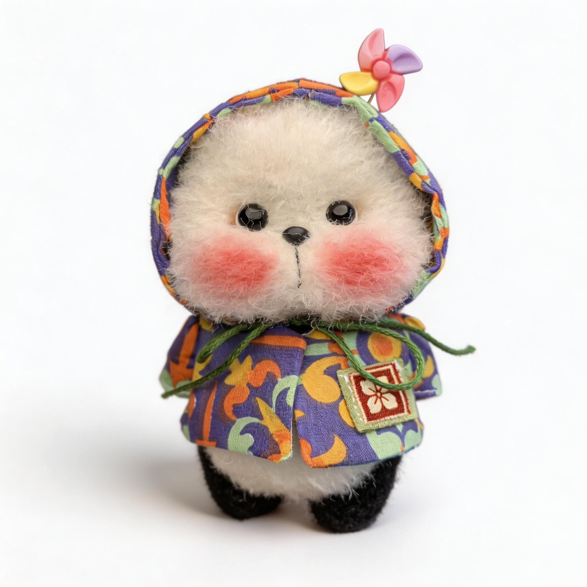
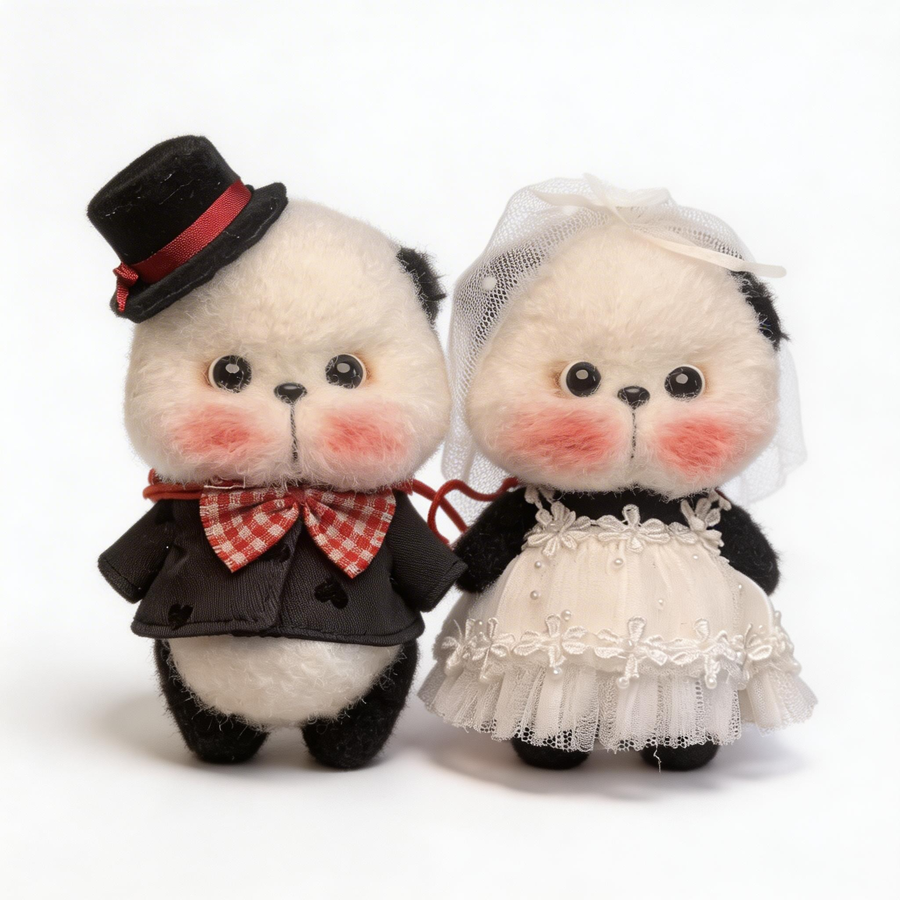
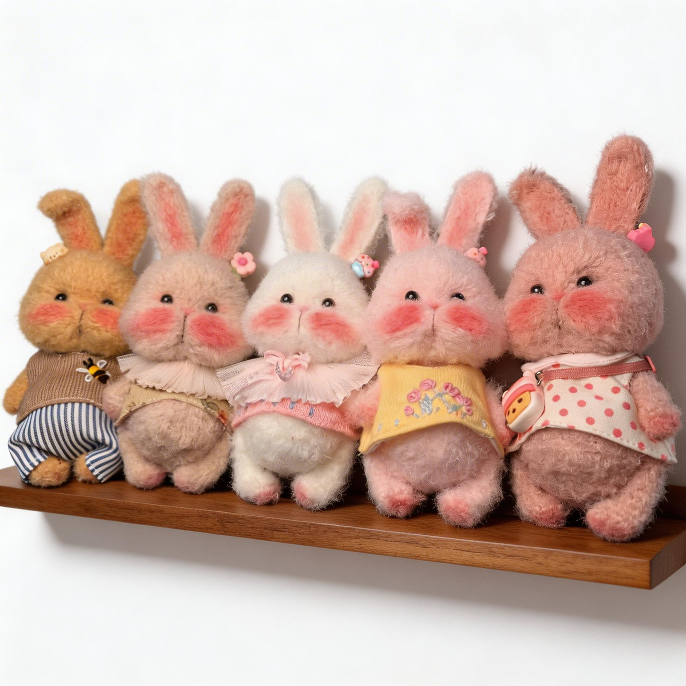
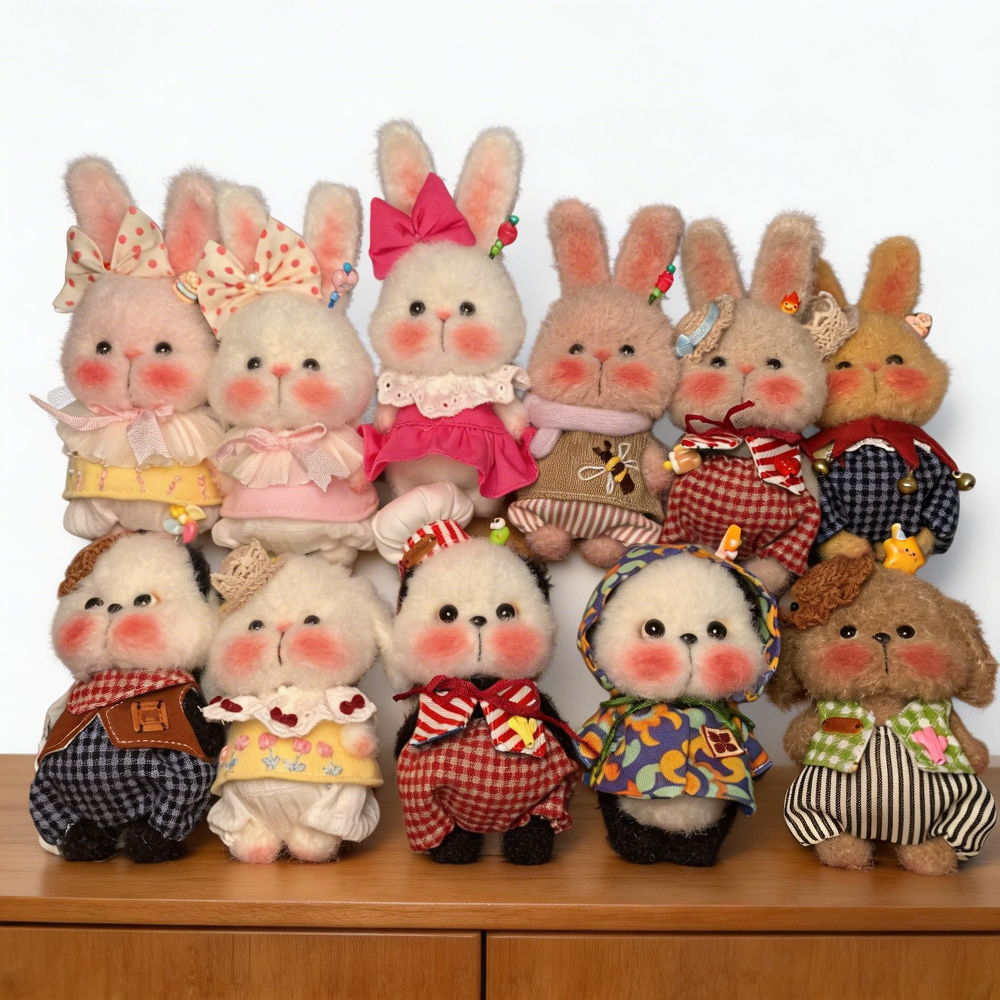
扫码添加微信
Scan to add WeChat